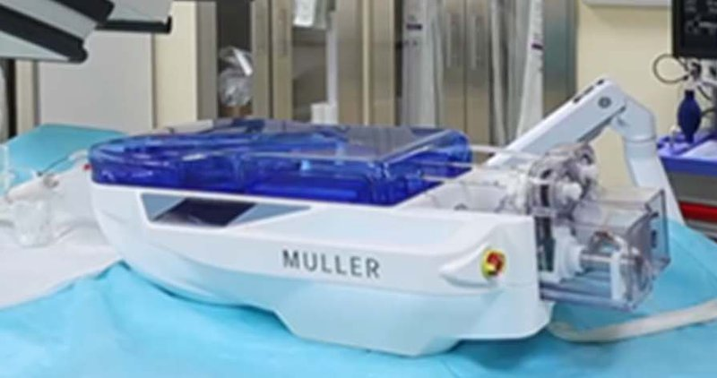

Academic bedside robots · hanglok_wang2024
Hanglok-Tech VIR
Hanglok-Tech vascular interventional robot (distributed architecture with DSA vision-servoing co-pilot)

1 / 9


- Family
- Academic bedside robots (academic)
- Devices
- 0.014 in microwire, guide catheter (8 F sheath in phantom), microcatheter; contrast injection module
- Degrees of freedom
- N.R.
- Push
- Other drives
- Twist
- Rotating clamp
- Tested up to
- Animal
- Sim-to-real
- None found — No simulation-trained controller found for this robot.
Testing
- Highest level
- Animal
- What was tested
- Phantom: six vascular paths. Animal: nine in vivo vessel-navigation trials in pigs under IACUC approval of 20 Feb 2024 (zhu2026).
- Key numbers
- Vision co-pilot lowered the mean maximum bending-risk value 113.0 -> 49.0 in phantom (-56.6 %) and 239.8 -> 80.5 in animals (-66.4 %) (zhu2026 abstract)
Mechanism
- Push (translation)
- other: microwire by an electric-gripper clamp on a lead-screw carriage with reverse drive (alternate clamp/release); microcatheter by dual friction wheels with multitooth Shore A70 silicone sleeve; guide catheter by advance-rotation module with Y-valve
- Twist (rotation)
- Microwire twisted by the clamp ('guidewire twister', not friction wheels); guide catheter rotated through bevel gears and clutch
- Device range
- 0.014 in microwire (nominal 0.36 mm); catheter sizes N.R.
- Target anatomy
- head-and-neck / arch phantom (Elastrat); porcine vessels
Sensing and interface
- Force sensing
- Pressure and torque sensors on USART ports of the embedded boards (zhu2026 Fig. 5); no force numbers reported in the sections read
- Leader and haptics
- Hand-held controller with joystick and touch screen (no haptics described)
- Imaging
- Runs in a clinical angiography suite with DSA frames fed to the controller (X-ray)
- Sterility
- Disinfected end effector; disposable contrast injector; further sterile-barrier detail N.R.
Size
- Footprint (mm)
- 800x400x250 (jin2025_natural Sec. III-C)
- Mass (kg)
- N.R.
Simulation
- Simulation model
- none found
- Sim-trained controller
- none found
Versions
- Lineage
- wang2024_vision (CBS 2024, phantom in an interventional suite) -> zhu2026_bending (T-RO 2026, adds phantom paths and in vivo trials)
Sources
- Vision Servoing Endovascular Interventional Robot System: Design and Verification · 2024 IEEE International Conference on Cyborg and Bionic Systems (CBS), 2024 · doi:10.1109/cbs61689.2024.10860327 [wang2024_vision]
- Bending-Aware Vision Co-Pilot for Intelligent Robotic Assistance in Endovascular Intervention · IEEE Transactions on Robotics, 2026 · doi:10.1109/tro.2026.3712458 [zhu2026_bending]
- Natural Human–Robot Interaction for Vascular Interventional Surgery: Design and Evaluation of a Leader Device With Haptic Feedback · IEEE Transactions on Human-Machine Systems, 2025 · doi:10.1109/thms.2025.3591542 [jin2025_natural]
Notes
- Notes
- Hanglok is a company; commercial status was not established in the papers, so the row is filed as academic with a company-affiliated prototype. The perception module is a trained DSA segmentation network, but it was not trained in simulation. | 2026-10-13 coordinator: footprint from jin2025_natural Sec. III-C (MULLER follower; W4, P2)
This record
- Read level
- full — full (wang2024, zhu2026 text); abstract (jin2025)
- Picture
- jin2025_natural Fig. 6(b) (prototype of the follower manipulator, MULLER, designed by Zhuhai Hanglok per Sec. III-C), T-HMS 2025, doi:10.1109/THMS.2025.3591542 ↗ — licence: publisher copyright; grade B
- Picture changes
- native extract (2000x1931 figure); main cropped to the drive unit
- Found by
- academic: Search of academic bedside robots.
- Data
- JSON · YAML:
records/robots/hanglok_wang2024.yaml - Correction
- Suggest a correction [repository not created yet]